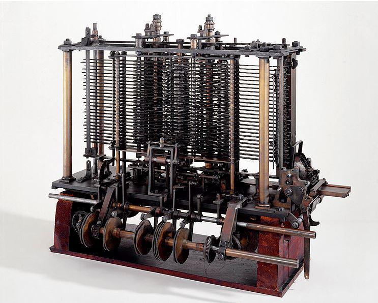

Ada was de eerste computerprogrammeur.
Ze is dus de eerste en ook nog een vrouw en daarom is ze zo beroemd. Ada Lovelace wordt ook wel de allereerste computerprogrammeur genoemd.Ze schreef namelijk het eerste computerprogramma voor de zogenaamde Analytical Engine (de eerste digitale computer) van Charles Babbage
Dat was deze:
